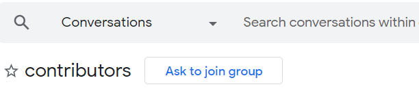
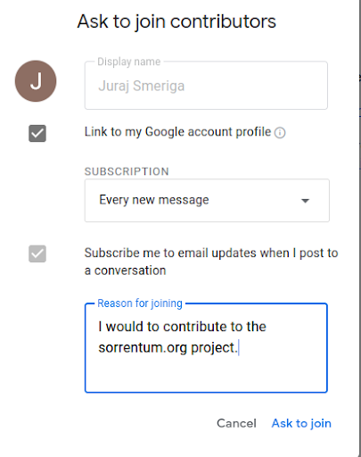
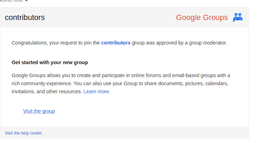

Team Collaboration
General Rules of Collaboration
Ask somebody if you have any doubts
- If you have doubts on how to do something you want to do:
- Look in the documentation and our Google drive
- Google search is your friend
- Ask your team-members
- Learn how to ask questions first
- Note that often people tell you his / her interpretation or their workaround for a problem, which might not be the best approach, so be careful and always think for yourself
- Don't hesitate to ask anyone, even GP & Paul
Ping Team Leaders when you are out of tasks
- When you're close to being out of tasks or all your ongoing PRs are waiting for review and are close to being merged, feel free to ping us in the Telegram chat to ask for more issues
- In this way, Team Leaders can quickly assign you another issue, before you run out of work
- The goal is for everyone to have 2 issues to work on at the same time to avoid getting blocked on us
Collaboration
Why do we need to follow this handbook?
Learning from each other
- Proper research and software engineering practices allow us to:
- Learn from each other
- Accumulate and distill the wisdom of experts
- Share lessons learned from our mistakes along the way
Consistency and process
- Consistency is a crucial enabler to make teams faster
- Productivity increases when team members "work in the same way", i.e., there is a single official way of performing a task, so that it's possible and easy to:
- Re-use research and software components
- Help each other in debugging issues
- Add/transfer new people to teams
- Work on multiple projects simultaneously
- Learn from each other's experience and mistakes
- Review each other's work looking for errors and improvements
- ...
- We are not going to discuss and debate the rationale, but instead assume the above as self-evident truth
Sync-ups
- We meet regularly every week and with different audiences to check on the progress of the many projects we work on
All-hands meetings
- All-hands meeting on Mondays has the following goals:
- Summarize ongoing projects and their status
- Review the ZenHub board and share the achieved milestones
- Discuss blocking tasks across projects
- Discuss topics of general interest
- E.g., organization, process
- Talk about the team, hiring, customers
Technical sync-ups
- We meet one or two times per week for each of the projects (e.g., IM, WEB3)
- Please check your calendar to make sure the times work and the invited participants are correct
- The people running the day-to-day project should update the meeting agenda in the Gdoc
- Try to do it one day before so that everybody knows ahead of time what we need to talk about and can come prepared
- Typically 2-3 issues are more than enough to fill one hour of discussion
- Give priority to tasks that are controversial, blocking, or finished
- No reason to linger on the successes or the easy stuff
- Send an email or tag a comment to Gdocs to broadcast the agenda
- It's ok to skip a meeting when the agenda is empty, or keep it short when there is not much to discuss
- We don't have to fill one hour every time
Ad-hoc meetings
- Don't hesitate to ask for a quick meeting if you are unsure about:
- What exactly needs to be done in a GitHub Issue
- How to set-up something (e.g., environment, docker)
- Better safe than sorry
Org emails
- GP & Paul may send emails with the subject starting with "ORG:" pointing to interesting docs that are of general interest and relevance
- Please make sure to read the docs carefully and internalize what we suggest to do and, especially, the rationale of the proposed solutions
- It's ok to acknowledge the email replying to
all@kaizen-tech.io
Synchronization point
- We understand that most of the time everybody is head-down making progress on their tasks
- This is great!
- However, sometimes we need synchronization:
- We need to stop the progress for a bit when requested
- Do an urgent task
- Acknowledge that the task is done
- Go back to pushing
- The procedure is:
- One of us (e.g., GP or Paul) creates a GitHub task, with:
- Detailed instructions
- The list of all of the persons in charge of executing the task
- Send a ping with the link on Telegram if the task is urgent
- Everybody does what's asked
- Mark on the GitHub task your name
Morning TODO email
The idea is to send a morning TODO email to broadcast:
- Issues you will be working on
- Working hours
- Blocking issues/PRs
E-mail template:
To: all@kaizen-tech.io
Subject: TODO
Hi all,
Today I am going to work
Hours:
- ...
Issues:
- GitHub issue title and number with a hyperlink
- Original ETA: YYYY-MM-DD
- ETA: YYYY-MM-DD
- Reason for ETA update: ...
- Blocked on: ... (ok to omit if not blocked)
- GitHub issue title and number with a hyperlink
- Original ETA: YYYY-MM-DD
- ETA: YYYY-MM-DD
- Reason for ETA update: ...
- Blocked on: ... (ok to omit if not blocked)
Good example:
To: all@kaizen-tech.io
Subject: TODO
Hi all,
Today I am going to work
Hours:
- 8
Issues:
- Create matching service #261
- ETA: today (2023-05-25)
- Original ETA: yesterday (2023-05-24)
- Reason for ETA update: it was more complex than what we thought
- Blocked on: PR review from Grisha
- Create linear supply/demand curves #177
- ETA: tomorrow (2023-05-26)
- Unit test `compute_share_prices_and_slippage()` #8482
- ETA Wednesday (06-19-2024)
Bad example:
To: all@kaizen-tech.io
Subject: to-do
Hi all,
Today I am going to work 2-6 hours.
- Calls
- PR reviews
- Finish the trading report analysis
- The goal is:
- Think about what you are going to work on for the day, so you have a clear plan
- Let Team Leaders know that you're going work today and what is your workload
- Make sure people blocked on your tasks know that / whether you are working on those tasks
- Broadcast if you are blocked or if you don't have tasks
- A TODO email replaces stand-up meetings
- When to send an email:
- Within the first hour of beginning the day
- It is recommended to check the inbox (email, GitHub) first to reflect all the update in the plan for the day
- Send an email to:
- For full-time employees/contractors:
all@kaizen-tech.io - For interns or collaborators:
contributors@crypto-kaizen.com - Email subject:
TODO(all caps)- It easier to filter emails by subject
- Reply to your previous TODO email so that at least last week of TODOs is included
- Specify how many hours are you going to work today
- On Monday we also specify an estimation for a week
- No need to be too specific, give just an approximation
- List all the tasks you're going to work during the day in priority order
- Add a hyperlink to the corresponding GitHub issue to each task in order to
ease the navigation
- For each task provide an ETA
- No reason to be optimistic: complex things take time to be done correctly
- Use a date in the usual format, e.g. 2023-05-10
- Add "today", "yesterday", "tomorrow", "end of week" so that it's easier to parse
- If your original ETA needs to be updated (e.g., you thought that you would have finished a task by yesterday, but it's taking longer) keep the older ETA and add the new one
- Report the PR/issue blocked
If you are a collaborator or intern, follow the steps to join the mailing group
- Visit the group
- Click “ask to join group”

- Choose the following settings

- Wait for the confirmation e-mail, one for the group managers will approve your request. It should look like this: 
Communication
Use the right form of communication
- GitHub
- This is a major form of communication about technical details, so if you
have any questions about any particular issue or PR, discuss it there first,
e.g.:
- Clarify issue specs
- Ask for help with debugging
- PR reviews
- Asana
- Is concerned with all the non-technical issues in general, e.g.:
- Work organization tasks
- Marketing and funding
- On-boarding process
- Telegram
- This is our messenger for tight interaction (like a debug session) or immediacy (e.g., "are you ready for the sync up?")
- Please, avoid discussing anything that can be discussed at GitHub or Asana
- You often need to reference some comments and ideas in other places like issues or messages and it is impossible to reference a Telegram message outside of it
- It is much easier for all reviewers to catch up with all the thinking process if it is logged at one place - Telegram is never a place for this
- Jupyter notebooks
- Generally used to implement and describe research in detail
Masternotebooks are intended to be used as tools for demonstrative analysis with visible stats and plots
- Markdown files
- Document instructions, process, design closely related to code
- Notes that need to be close to the code itself
- Documents that need to be authoritative and long-term (e.g., reviewed, tracked carefully)
- Google docs
- Document research in a descriptive way
- Explain what are the results independently on how they were reached
- Emails
TODOs primarily- Rarely used for any other purpose
- Exceptions are to send non-urgent information to everybody
- There should be little replication among these forms of documentation
- It's not ok to file a bug and then ping on Telegram unless it's urgent
- Google Form
- When you want to ask a question anonymously use https://forms.gle/KMQgobqbyxhoTR9n6
- The question will be discussed at the all hands meeting
DRY also applies to documentation
- DRY! Do not Repeat Yourself
- E.g., it's not a good idea to cut & paste pieces of Gdocs in a GitHub bug, rather just point to the relevant session on Gdocs from the GitHub bug
Avoid write-once code and research
- Code and research is:
- Written once by a few people
- Read many times by many people
- Therefore it is essential to invest in the process of writing it heavily
Consistency
- Coding/research across our group is done with consistent procedures, code layout, and naming conventions
Training period
- When you start working with us, you need to go through a period of training in following the procedures and conventions described in this handbook
- We understand that this is a painful process for you:
- You need to change your old habits for new habits that you might disagree with, or not comprehend
- You need to rework your code/notebooks that are already correctly working until it adheres to the new conventions
- Understand that this is also a painful process for the reviewers:
- On top of their usual workload, they need to:
- Invest time to explain to you how we do things
- Answer your questions
- Try to convey the sense of why these procedures are important
- In a few words, nobody enjoys this process, and yet it is necessary, mandatory, and even beneficial
- The process acquaintance can take several days if you are open and patient, but months if you resist or treat it as an afterthought
- Our suggestion is to accept these rules as the existence of gravity
Go slowly to go faster
- Once you reach proficiency, you will be moving much faster and make up for the invested time
- In fact, everyone will be much quicker, because everyone will be able to look at any part of the codebase or any notebook and get oriented quickly
Vacations/OOTO time
- We use vacation calendar to announce time off
- If you are a part of @all mailing group you should be able to access this calendar with your company email
- Create an event in it, whenever you have planned time off in order to let your colleagues know in advance
Improve your English!
- Make sure you have English checker in all your tools:
- Pycharm: you can use this plugin
- Vim:
set spell - Google docs: Grammarly
- GitHub and web: Grammarly
- Email client: TBD
- These tools are going to help you improve since you can see the mistake as you go
- Feel free to use Google Translate when you are not sure about a word or a phrase
- What's the point of doing an excellent job if you can't communicate it?
Study an English grammar book
- I used this when I learned English (late in life at 25 starting from no-English-whatsoever, so you can do it too)